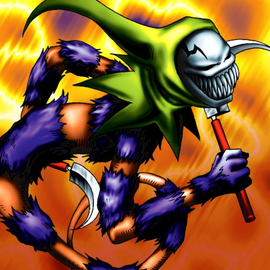

Masked Clown

STATS
ATK: 500
DEF: 700DECK COST
Deck Cost per Card: 12Fusion List (40 Possible Fusions)
- Masked Clown + Abyss Flower = Bean Soldier
- Masked Clown + Ancient Jar = Minomushi Warrior
- Masked Clown + Armaill = Charubin the Fire Knight
- Masked Clown + Baby Dragon = D. Human
- Masked Clown + Basic Insect = Cockroach Knight
- Masked Clown + Blue-Eyed Silver Zombie = Zombie Warrior
- Masked Clown + Bone Mouse = Zombie Warrior
- Masked Clown + Celtic Guardian = Dark Elf
- Masked Clown + Charubin the Fire Knight = Flame Swordsman
- Masked Clown + Corroding Shark = Zombie Warrior
- Masked Clown + Cyber Commander = Cyber Soldier
- Masked Clown + Dancing Elf = Dark Elf
- Masked Clown + Dark Plant = Bean Soldier
- Masked Clown + Dragon Zombie = Sword Arm of Dragon
- Masked Clown + Fire Eye = Charubin the Fire Knight
- Masked Clown + Fire Reaper = Zombie Warrior
- Masked Clown + Firegrass = Bean Soldier
- Masked Clown + Flame Ghost = Zombie Warrior
- Masked Clown + Ganigumo = Cockroach Knight
- Masked Clown + Griggle = Bean Soldier
- Masked Clown + Haniwa = Minomushi Warrior
- Masked Clown + Jinzo #7 = Cyber Soldier
- Masked Clown + Koumori Dragon = Sword Arm of Dragon
- Masked Clown + Lesser Dragon = D. Human
- Masked Clown + Little Chimera = Tiger Axe
- Masked Clown + Man-Eater Bug = Cockroach Knight
- Masked Clown + Man Eater = Bean Soldier
- Masked Clown + Muka Muka = Minomushi Warrior
- Masked Clown + Mushroom Man = Bean Soldier
- Masked Clown + Petit Dragon = Dragon Statue
- Masked Clown + Rainbow Flower = Bean Soldier
- Masked Clown + Shadow Specter = Zombie Warrior
- Masked Clown + Skull Servant = Zombie Warrior
- Masked Clown + Sleeping Lion = Tiger Axe
- Masked Clown + The Judgement Hand = Judge Man
- Masked Clown + Wicked Dragon with the Ersatz Head = Dragon Statue
- Masked Clown + Wing Egg Elf = Dark Elf
- Masked Clown + Yamatano Dragon Scroll = Dragon Statue
- Masked Clown + Yashinoki = Bean Soldier
- Masked Clown + Zombie Warrior = Armored Zombie